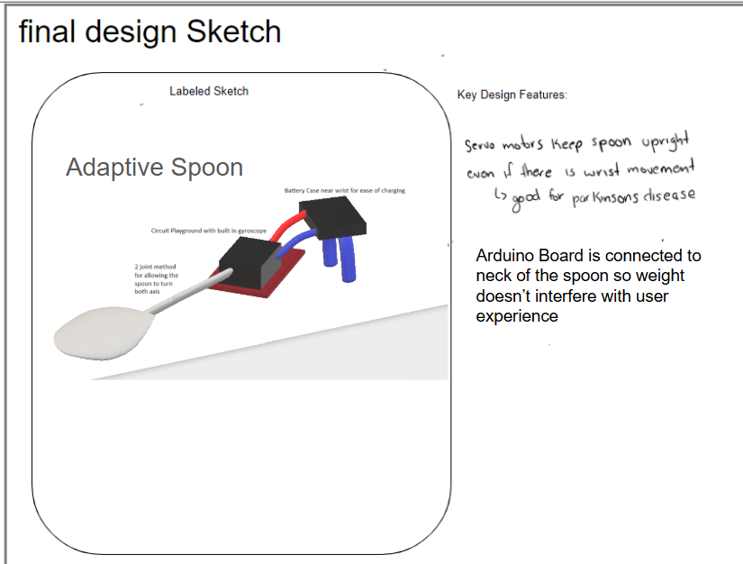
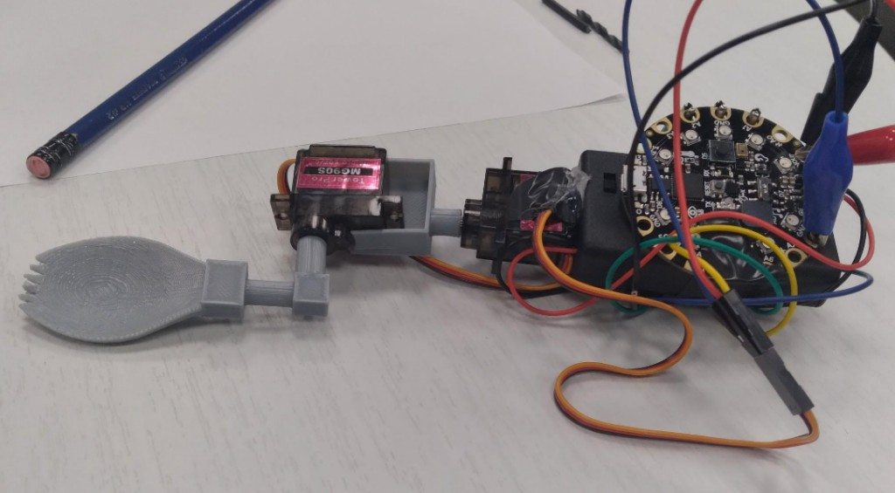
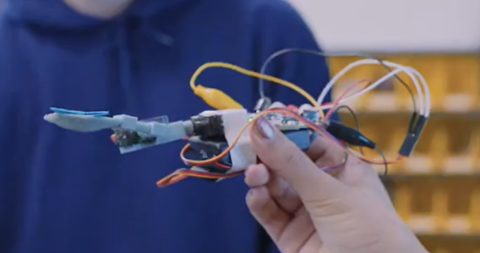
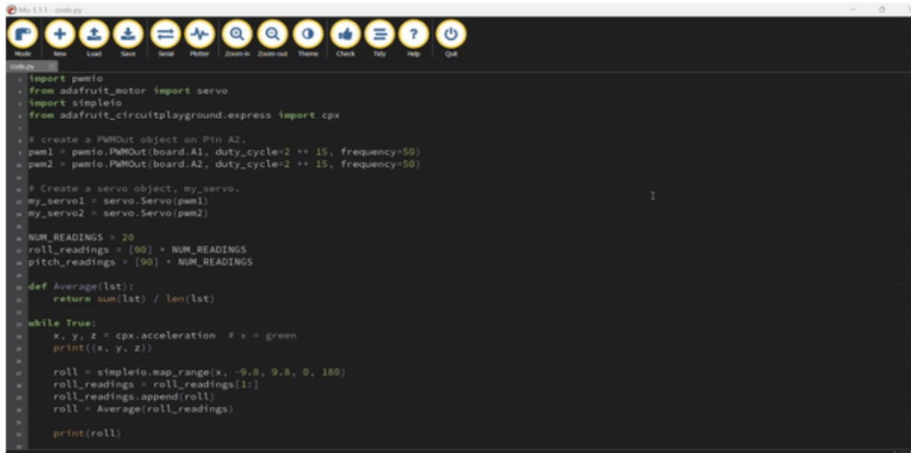

Self-Stabilizing Spork
One of my first projects: an adaptive spork for people with Parkinson's who experience hand tremors, built with a Circuit Playground, servo motors, and a 3D-designed spoon attachment.
Overview
One of my first projects that made me fall in love with the design process and building. I developed a self-stabilizing spork that counters hand tremors so the utensil stays more level while eating. The system uses gyroscope data from a Circuit Playground to control the rotation of servo motors attached to a custon made 3D-printed spork.
Design
The early design sketch used a two-joint method so the spoon could move on both axes, with the Circuit Playground and battery placed nearer the wrist to keep weight from interfering with use.

First prototype design sketch
Prototype
I built a working mock prototype with servo motors, the Circuit Playground, and a 3D-printed spoon attachment.


Code
Python on the Circuit Playground reads accelerometer and gyroscope data, smooths the readings, and maps them to servo angles so the motors keep the spork upright as the wrist moves.

CircuitPython code controlling servo rotation from sensor data
Technical details
Adafruit Circuit Playground Express · servo motors · 3D-designed spork attachment · CircuitPython · gyroscope / accelerometer stabilization.